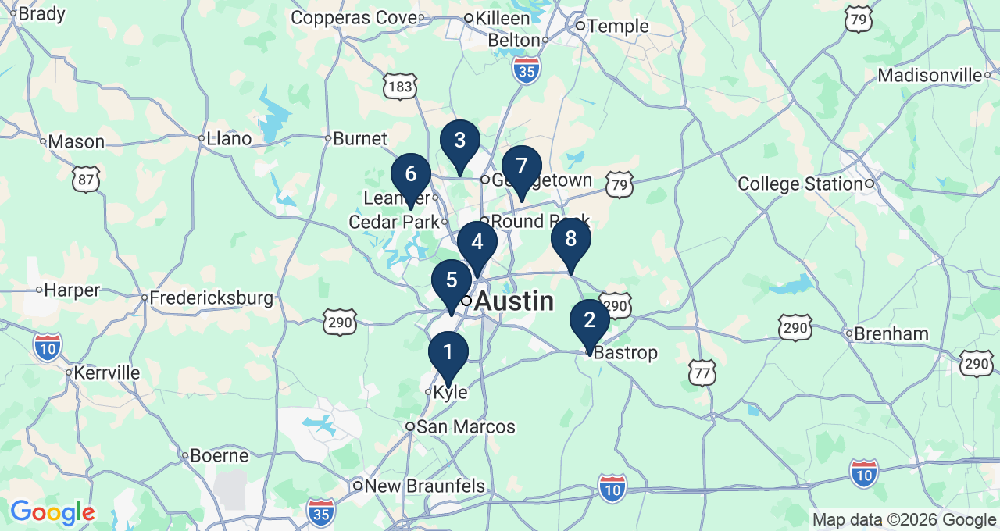
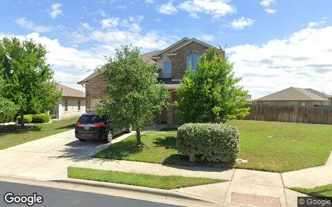

This Issue August 2026 edition
Flip resales are clearing at $144/sqft while investors are buying single-family at $251/sqft, and the gap is geographic
The 107 single-family flips that resold this edition cleared at a median $144 per square foot, while investors bought single-family at a median $251 per square foot. The spread is mostly geography, not margin collapse: flips concentrated in Kyle (9), Georgetown West (8) and South Austin (6), and suburban basis runs $160/sqft in Kyle and $158/sqft in Hutto against $367/sqft across 373 Austin purchases. Median flip resale was $315,748 versus a $426,894 median single-family acquisition. On these numbers the renovation-exit business is working in the ring, not in the core.
Investor Playbook
What this issue's numbers suggest checking, by investor type. Observations from recorded data — not investment, legal, or tax advice.
Price contracts to a $144/sqft exit, not to core Austin comps
Buy where flips are actually reselling: Kyle, Georgetown West, South Austin
The $158 to $191 per foot suburban belt is where basis still works
Fill the gap seller paper is leaving on renovation deals
Small retail is the only liquid commercial line; screen out the mega-prints
Factoids
Numbers from this period a practitioner would repeat to a colleague. Each computed directly from recorded instruments.
$495,957 — Median purchase by out-of-state buyers, who made 212 buys (19% of investor purchases)
36 private loans — Recorded private loans this edition, median $260,900
190 seller-financed notes at $284,821 — New notes held, count down but median up sharply
217 residential lot purchases — Vacant residential land buys at a $304,443 median
5.9 months median hold — Hold period on flips sold in the latest fully measurable twelve months (1,612 of 1,713 measured)
46 buys at a $3.07M median in 78752 — Highland's headline zip median is a recording artifact, not a market price
Market Activity — Investor Purchases
Monthly count of investor purchases of MSA properties (left axis) and the median purchase price (right axis), trailing 13 months. The most recent month can grow up to ~15% as late recordings arrive.

Where the Money Went
The geography of the period's investor activity: which zip codes saw the most recorded deals, and the largest individual transactions at street level.
The 8 busiest zip codes for investor deals

| # | Zip | Area | Purchases | Flips | Median buy |
|---|---|---|---|---|---|
| #1 | 78640 | Kyle | 48 | 9 | $277,892 |
| #2 | 78602 | Bastrop | 51 | 3 | $201,362 |
| #3 | 78628 | Georgetown West | 44 | 8 | $439,166 |
| #4 | 78752 | Highland | 46 | 1 | $3.1M |
| #5 | 78745 | South Austin / Westgate | 38 | 6 | $473,480 |
| #6 | 78641 | Leander | 37 | 5 | $457,520 |
| #7 | 78634 | Hutto | 32 | 5 | $334,076 |
| #8 | 78621 | Elgin | 35 | 1 | $221,892 |
Largest recorded deals of the period, at street level


Deal sheet — largest recorded transactions
| Date | Type | Amount | Property | Use |
|---|---|---|---|---|
| May 8 | Flip | $166.3M | 173 Prairie Verbena Dr, Kyle 78640 | Single family |
| May 19 | Flip | $2.4M | 8307 Silver Ridge Dr, Austin 78759 | Single family |
| Jun 22 | New build | $2.6M | 15015 Oklahoma St, Austin 78734 | New construction |
| Jun 15 | Purchase | $988.4M | 12317 Technology Blvd, Austin 78727 | Industrial |
| May 20 | Purchase | $698.3M | 200 Springtown Way Ste 114, San Marcos 78666 | Condo |
| Jun 23 | Private loan | $2.6M | 408 Sleat Dr, Spicewood 78669 (2 parcels) | Other land |
Largest flip margin deals of the period, at street level
Gross margin = recorded sale price minus the flipper's recorded purchase price. Purchase deeds are recoverable for roughly 4 in 10 flips; rehab and carry costs are not public record.



Market Pulse
| August edition | Count | Median | Prior period | Same months last year |
|---|---|---|---|---|
| Investor purchases | 1,113 | $417,000 | 1,179 (−6%) | 1,297 (−14%) |
| Flips sold (existing homes) | 115 | $315,748 | 160 (−28%) | 217 (−47%) |
| Builder new-build sales | 89 | $458,850 | 104 (−14%) | 120 (−26%) |
| Private loans recorded | 36 | $260,900 | 41 (−12%) | 180 (−80%) |
| Seller-financed notes | 190 | $284,821 | 201 (−5%) | 263 (−28%) |
| Wholesale assignments surfaced | 13 | $409,220 spread | 21 (−38%) | 34 (−62%) |
Every recorded line in the table is down against both the prior period and a year ago, but the declines are not uniform. Investor purchases held up best at 1,113, off 6% from the prior period and 14% year over year, with the median at $417,000 versus $414,112 a year ago, essentially unchanged. The contraction is concentrated in the exit and credit lines: flips 115 versus 217 with the median down 21%, new-build 89 versus 120, wholesale 13 versus 34, private loans 36 versus 180. Read that as an acquisition market that is still functioning at stable prices while resale and recorded leverage thin out. Counts are recorded instruments lagging four to eight weeks, and the most recent month can grow up to roughly 15% as late filings arrive.